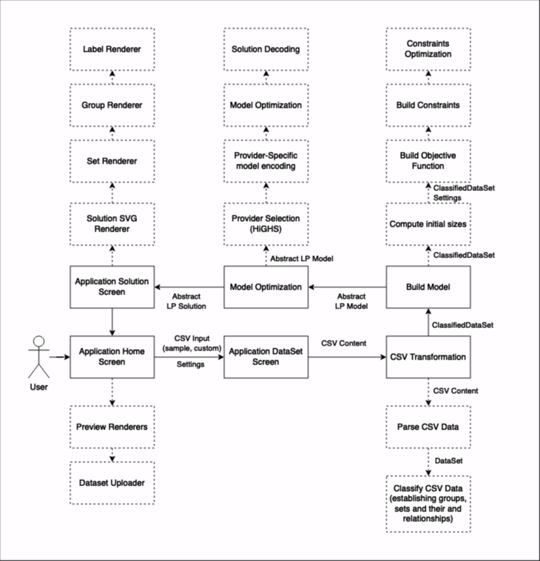
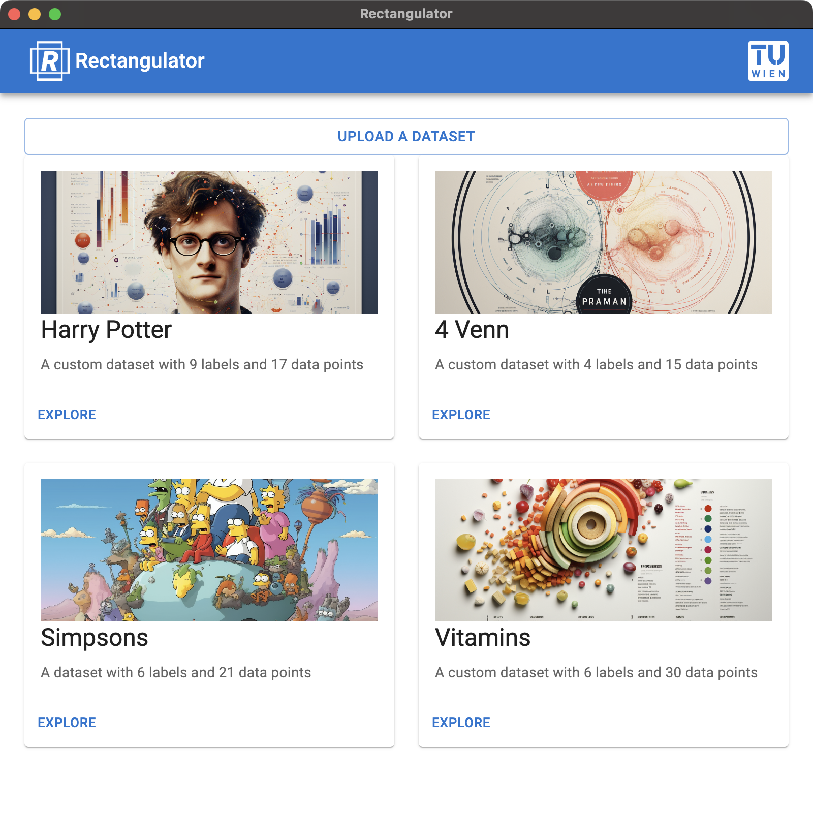
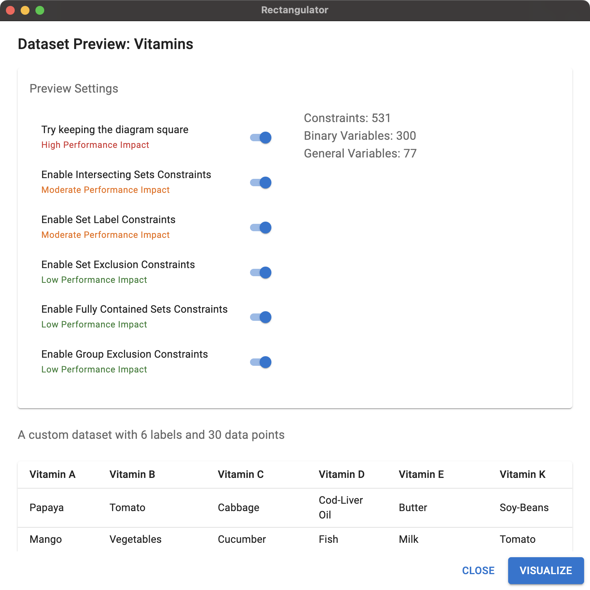
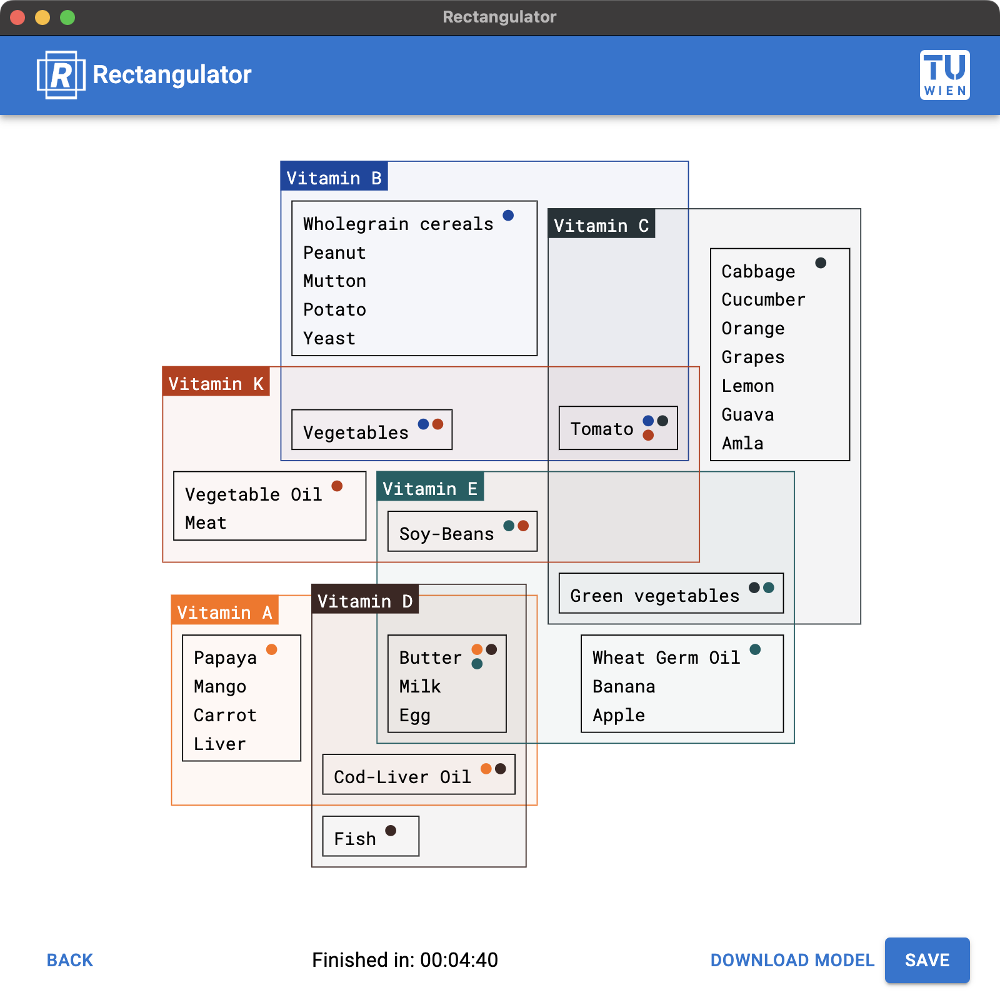

Links: GitHub
This project implements rectangular Euler-like sets visualization described in the following paper and its supplementary:
Additional data samples can be found under the samples folder.

Although the project uses a highly efficient LP Solver HiGHS, it cannot achieve the same performance levels as commercial products.
Performance of the application highly depends on the complexity of the dataset. Optimization may be taking from seconds up to tens of minutes for highly intersecting sets.
We therefore introduce constraint toggles, to let the user decide which constraints to compute. This allows the user to trade-off between performance and accuracy.
Home Screen

Preview Screen

Solution Screen

npm install -g yarnyarn installyarn startTo create project binaries simply run:
yarn package
You will find the binaries under the build folder.
At the moment the project offers two HiGHS binaries (can be found under src/resources/binaries):
highs_darwin_arm64 for Apple Silicon (macOS)highs.wasm - C++-based web assembly binary which is used as a fallback optionNote you will need
cmakeandmakefor the following steps
The actual platform-specific binary may be a little bit faster. You can therefore build and add a binary by yourself:
make build-highs
The binary (you will find it under .tmp/HiGHS/build) has to be placed under src/resources/binaries and added to the mapping in src/models/solvers/highs.ts.
yarn storybook
yarn html